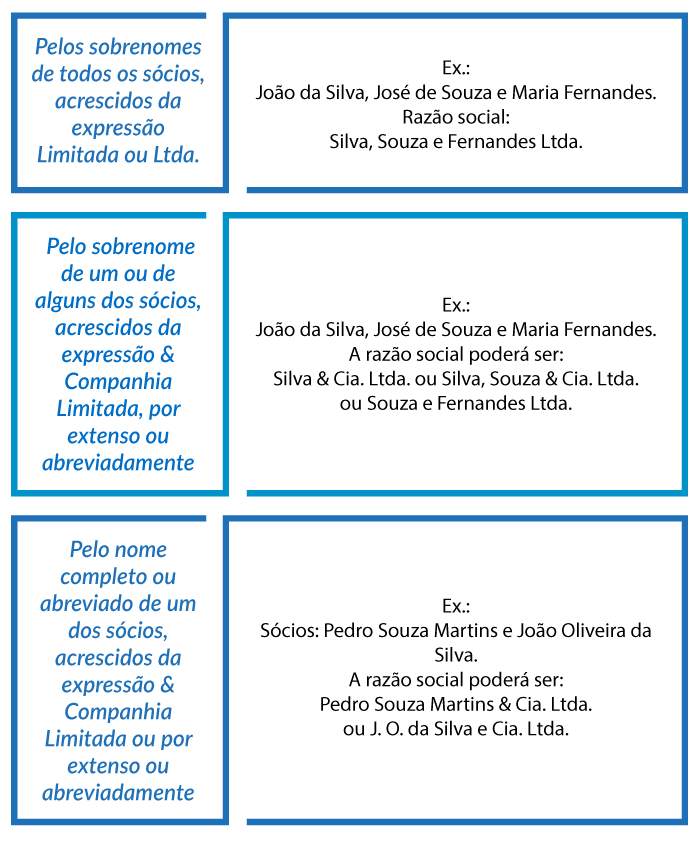
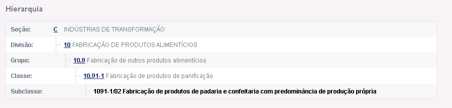
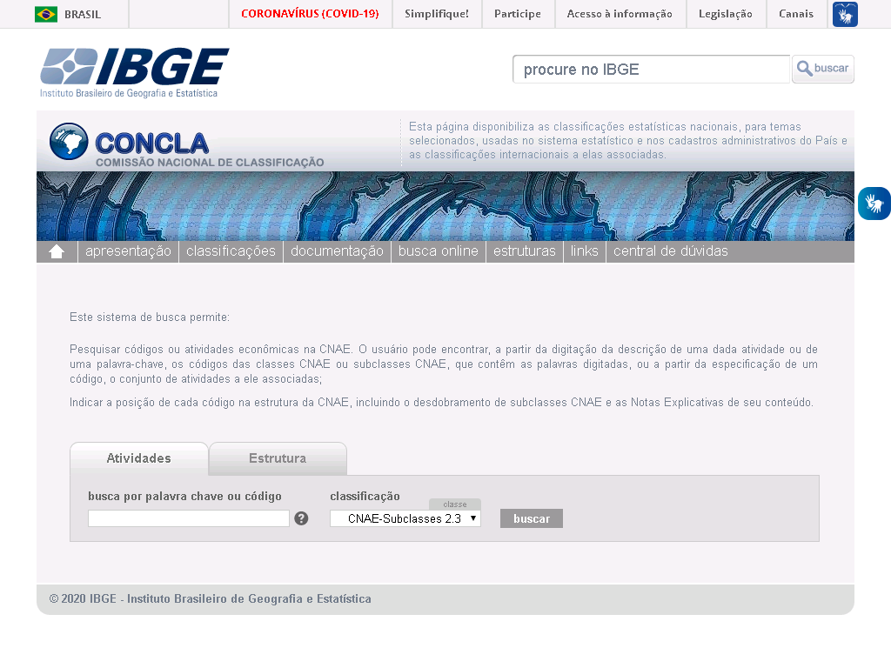
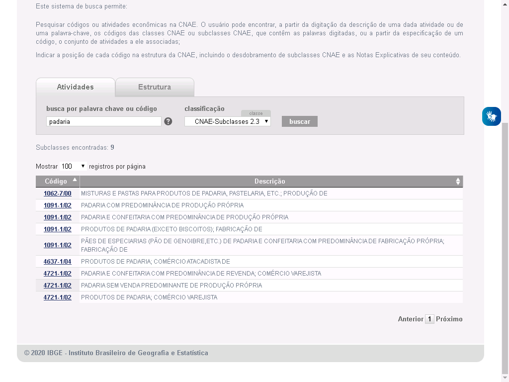
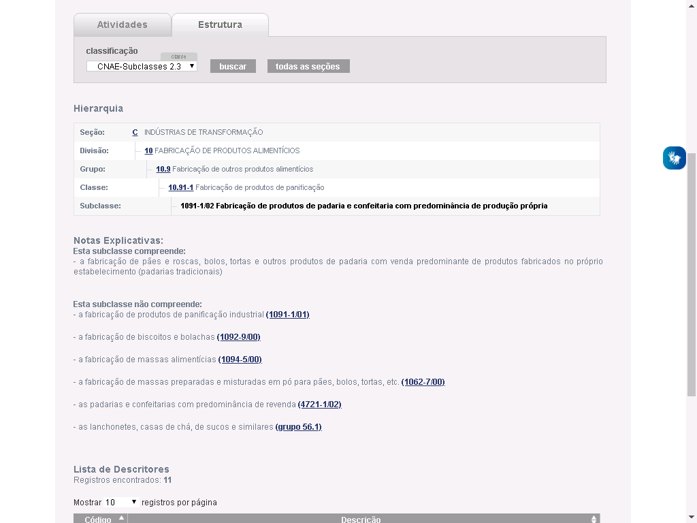
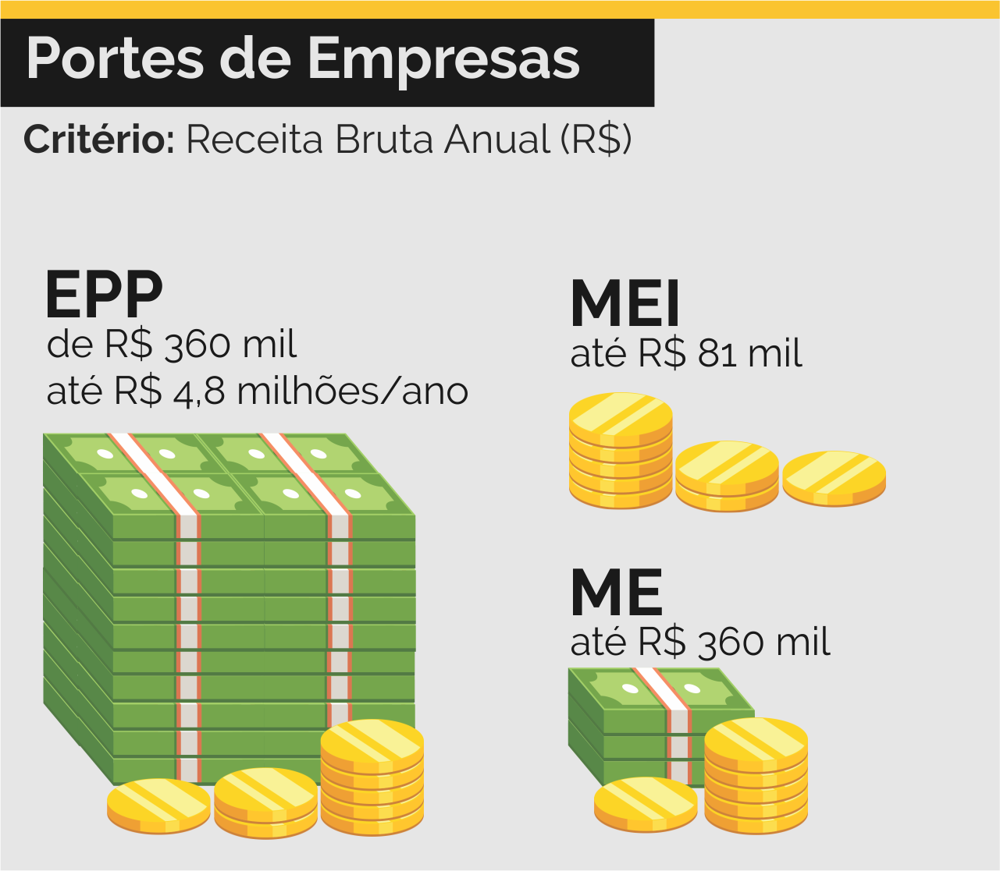
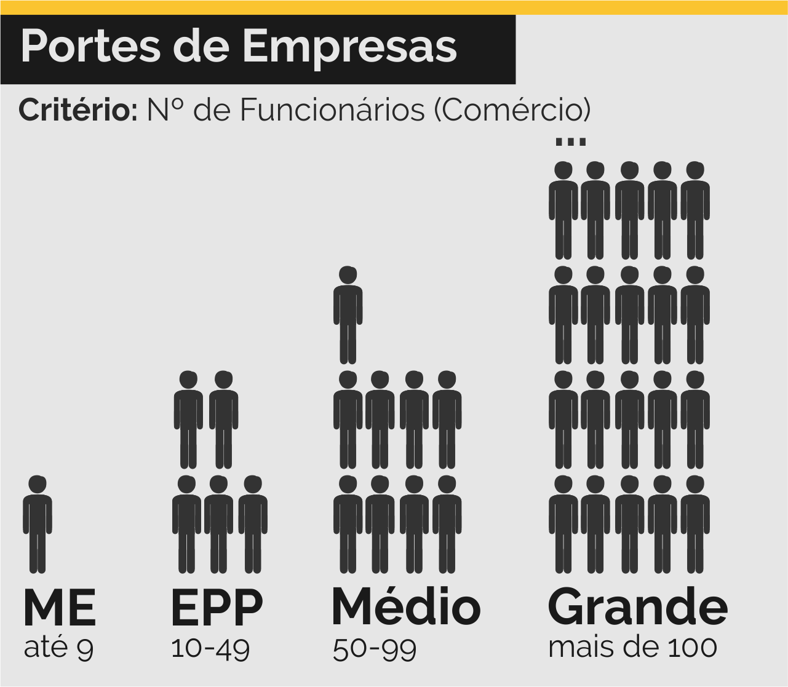
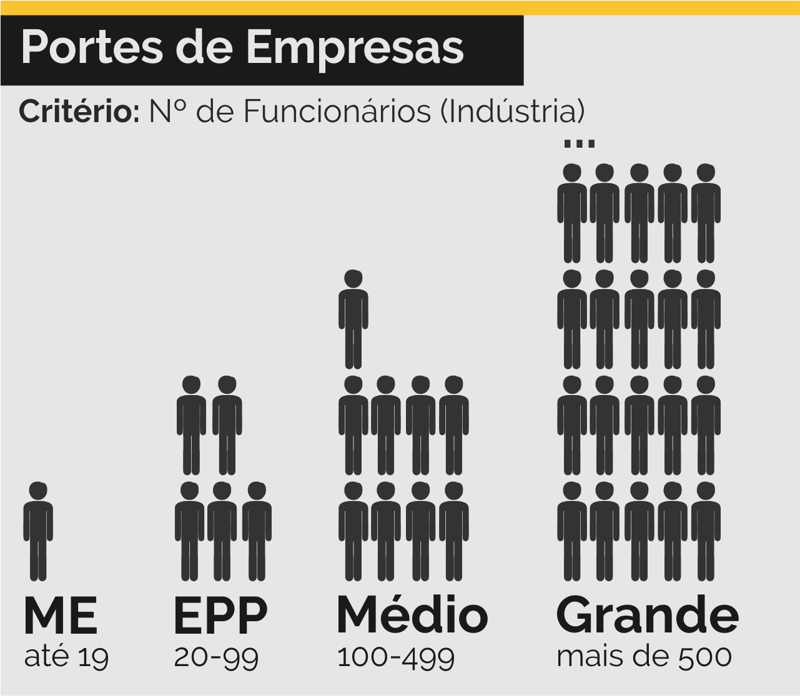

Bem vindx a mais uma aula de Contabilidade.
Na última aula estudamos o conceito de Personalidade Jurídica e entendemos como o mesmo está relacionado com as Pessoas Fìsicas e Jurídicas.
Vimos também que existem diferentes formas de organização que se diferenciam pelos seus objetivos sociais e econômicos. Além disso, discutimos brevemente sobre os estatutos - documentos que regem o funcionamento das sociedades.
Hoje iremos discutir sobre os estatutos e planos de negócios, e falar sobre um tipo de documento específico que existe em toda sociedade comercial (empresa): o Contrato Social.
RENNÓ. Administração Geral para Concursos
Vamos lá!
Sumário da Aula
- Formalização de Empresas
- Conceitos Importantes
- Tipos de Empresa
- Contrato Social
- Plano de Negócios
- Resumo
- Exercícios
- Referências Bibliográficas
Formalização de Empresas
Assim como existem diferentes tipos de Pessoas Jurídicas e de formas de organização, o mesmo se aplica para as Empresas.
As empresas surgem como uma forma de ofertar produtos ou serviços para a sociedade visando o lucro para os seus sócios. No entanto, a formalização de uma sociedade como uma empresa trás uma de benefícios e de deveres para os seus fundadores (ANTIONARO, 2014).
Os principais benefícios da formalização, ou seja, do registro de uma empresa perante ao Governo, são:
- Emissão de Notas Fiscais: isso garante a possibilidade da sua empresa vender para outras empresas e até mesmo para o Governo;
- Contratação de Funcionários: garante a divisão de tarefas e maior produtividade na sua empresa;
- Acesso a Serviços Bancários: permite que as empresas façam empréstimos com juros reduzidos e outros incentivos fiscais;
- Formação de Consórcios: as empresas possuem o direito de se unirem em grupos para venderem e comprarem em conjunto, reduzindo gastos e aumentando a cartela de clientes;
Por outro lado a formalização apresenta algumas desvantagens, como:
- Pagamento de Impostos: parte do lucro obtido pela empresa deve ser destinada para o pagamento de tributos governamentais (impostos, taxas e contribuições) diversas, como Seguro Desemprego, ICMS, ISS, etc.;
- Documentação: o registro de uma empresa, bem como o seu funcionamento, demanda de uma série de documentos (Alvarás, Licenças, Contratos, CNPJ, pagamentos fiscais e trabalhistas, etc) que devem ser mantidos atualizados e guardados durante algum tempo, o que demanda de uma organização documental dentro da empresa;
- Burocracia: a regularização ou atualização de dados cadastrais pode ser extremamente demorada, sendo necessário recorrer a diversos órgãos de registro ou governamentais;
- Sistemas Descentralizados: o pagamento de impostos e as pendências fiscais e trabalhistas devem ser feitos por diferentes departamentos da empresa (ou tercerizados) utilizando diferentes sites e sistemas fornecidos pelo Governo, devido a falta de um Sistema Único por parte do Governo;
O processo de formalização de um negócio deve ser feito em várias etapas distintas, o que pode ser bastante lento em alguns casos. Estas etapas são:
1) Consulta Prévia: O empresário deve realizar uma consulta prévia na Junta Comercial Estadual sobre o nome de sua empresa (para garantir se ele já foi ou não utilizado); além disso, ele deve solicitar à Prefeitura de sua cidade o TVL (Termo de Viabilidade de Localização), um documento que será utilizado para a emissão do alvará de funcionamento.
2) Receita Federal: Após realizar as consultas prévias é hora de registrar a empresa na Receita Federal, gerando um CNPJ e um número de inscrição estadual (IE). Este processo pode ser feito pela Internet.
3) Registro Comercial: Tendo recebido o CNPJ, a empresa deverá ser registrada na Junta Comercial do seu Estado, garantindo assim que ela seja devidamente regulamentada. Neste ponto, a empresa passa a possuir o NIRE (Número de Identificação de Registro de Empresa) que garante que a mesma possa emitir notas fiscais, obter empréstimos e crédio bancário e até mesmo fazer compras de alguns fornecedores.
4) Registro Municipal: A última etapa do processo consiste na emissão do alvará de localização e funcionamento, que assegura à empresa operar em sua sede.
Conceitos Empresariais
No processo de abertura de uma empresa, bem como do preenchimento de seu contrato social e plano de negócios, é importante definir algumas bases que guiarão o funcionamento da mesma. Por esta razão é importante conhecer alguns termos.
Capital Social
Para se abrir uma empresa é necessário investir um capital inicial (dinheiro), seja por meio de dinheiro em espécie, crédito ou bens (como móveis, imóveis, equipamentos…). Este investimento recebe o nome de capital social.
Quotas
Em empresas formadas por mais de 1 empresário, o Capital Social é formado pela união do cada sócio contribuiu.
Imagine que 4 amigos resolveram abrir uma lanchonete, e por isso cada um deles irá investir uma quantia em espécie:
- João = R$ 2.000,00
- Pedro = R$ 2.500,00
- Maria = R$ 3.000,00
- Ana = R$ 7.500,00
O Capital Social desta lanchonete foi de R$15.000,00. No entanto cada sócio investiu uma parte deste valor, ou seja, uma quota diferente.
Quotas geralmente são definidas pelo seu valor, em espécie, e pela porcentagem que este valor representa do Capital Social (CS).
- João = R$ 2.000,00 = 13,3%
- Pedro = R$ 2.500,00 = 16,7%
- Maria = R$ 3.000,00 = 20,0%
- Ana = R$ 7.500,00 = 50,0%
Vamos supor que, após alguns meses, a lanchonete tenha lucrado R$ 5000,00. Como este valor deverá ser dividido entre os sócios?
A resposta é simples: cada um receberá proporcionalmente àquilo que investiram, ou seja:
- João receberá 13,3% do lucro da empresa
- Pedro receberá 16,7% do lucro da empresa
- Maria receberá 20% do lucro da empresa
- Ana receberá 50% do lucro da empresa
O mesmo princípio se aplica caso a empresa tenha algum prejuízo… se ela contrair uma alta dívida, Ana deverá (na maioria dos casos) contribuir com mais dinheiro do que João.
Nome Empresarial e Nome Fantasia
Toda empresa deve possuir 2 denominações diferentes: o Nome Fantasia e o Nome Empresarial (razão social).
O Nome Fantasia de uma empresa é o nome pelo qual os clientes e o mercado a conhecem. Exemplos:
- Padaria da Dona Maria
- Supermercados BH
- C&A
- Ricardo Eletro
- Gol Linhas Aéreas
- Positivo Tecnologia
- UBER
Já o Nome Empresarial é o nome de registro da empresa, ou seja, o nome pelo qual ela responde legalmente. Esta denominação é utilizada nos documentos da empresa (CNPJ, contratos) e nas relações comerciais que ela realiza no mercado. Exemplos:
- Isabel G. B. Confeiteira
- Supermercados BH Comércio de Alimentos LTDA.
- C&A Modas S.A.
- RN Comércio Varejista S.A.
- Gol Linhas Aéreas Inteligentes S.A.
- Positivo Tecnologia S.A.
- Uber do Brasil Tecnologia LTDA.
Para formar o nome empresarial, é necessário utilizar os nomes dos titulares e as atividades efetuadas pela empresa:

Existem dois tipos diferentes de nomes empresariais.
Regras para nomeação por Denominação.
Regras para nomeação por Firma.

Objeto Social e CNAE
Todas as empresas são fundadas para realizarem algum tipo de atividade específico: uma padaria e uma pizzaria, apesar de possuírem semelhanças, desempenham atividades comerciais diferentes. O objeto social de uma empresa é o conjunto de atividades econômicas que a mesma irá desempenhar.
O Objeto Social deve ser explicitamente indicado no Contrato Social, bem como profundamente analisado no Plano de Negócios.
O IBGE possui um sistema de classificação das atividades econômicas do Brasil, chamado de CNAE.
O CNAE consiste em uma base de dados que relaciona cada atividade econômica a um código específico. Esta classificação se estrutura em uma hierarquia específica.
Para fins contábeis geralmente seu utiliza a subclasse da atividade econômica, que corresponde ao nível com maior descrição da mesma:

A base de dados do CNAE pode ser acessada no site do IBGE. Para relizar uma pesquisa basta inserir o termo procurado na caixa de pesquisa e clicar sobre a opção “Buscar”.

A página de resultados mostrará um série de atividades relacionadas ao tema. Leia cuidadosamente cada descrição para encontrar a atividade correta da empresa em questão.

Ao clicar sobre o código da atividade, abrirá uma nova página contendo importantes detalhes sobre a subclasse escolhida. Lembrando que o código utilizado está apresentado no item subclasse.

Uma empresa pode realizar mais de 1 atividade (CNAE). No entanto, uma destas atividades deverá ser a principal e as outras deverão ser consideradas secundárias. Considerando, a exemplo, uma padaria, pode-se ter:
ATIVIDADE PRINCIPAL:
- 1091-1/02 Fabricação de produtos de padaria e confeitaria com predominância de produção própria
ATIVIDADES SECUNDÁRIAS:
- 1092-9/00 Fabricação de biscoitos e bolachas
- 5611-2/03 Lanchonetes, casas de chá, de sucos e similares
- 1094-5/00 Fabricação de massas alimentícias
Portes de Empresas
As empresas podem ser classificadas conforme o seu tamanho. Este porte é utilizado como base para se definir o enquadramento tributário das mesmas.
O porte de uma empresa pode ser definido tendo como base sua renda anual:

Outro tipo de classificação utilizada diz respeito ao tipo de funcionários. Neste caso a área de atuação da empresa (comércio ou indústria) também é levada em consideração.


Enquadramento Jurídico
Trata-se do tipo da empresa, que será apresentado abaixo.
Enquadramento Tributário
Toda empresa, por exercer atividade comercial ou técnico-científica, deve pagar uma série de impostos e taxas ao Governo. Este pagamento pode ser feito por meio de diferentes modelos de tributação.
No Simples Nacional, modelo criado em 2006, micro e pequenas empresas com lucro anual de até R$ 4,8 milhões, o recolhimento de vários impostos (IRPJ, CSLL, PIS/Pasep, Cofins, IPI, ICMS, ISS e a Contribuição para a Seguridade Social destinada à Previdência Social a cargo da pessoa jurídica (CPP)) é feito por meio de um Documento Único de Arrecadaçã (DAS).
Outra vantagem do Simples está na existência de um sistema eletrônico centralizado, com todas as funcionalidades necessárias para a tributação.
Para empresas com lucro anual entre R$ 4,8 milhões e R$ 78 milhões, o sistema mais indicado é o de Lucro Presumido, que possui vantagens relacionadas ao porte das empresas - mas a principal desvantagem é que o pagamento de cada imposto deve ser feito separadamente.
O modelo de Lucro Real, por sua vez, garante diversos benefícios fiscais à empresa (taxas de juros reduzidas, condições especiais de crédito) mas tende a ter custos operacionais altos, vistos que os impostos são pagos individualmente e com maior rigor.
Tipos de Empresa
Durante o processo de formalização de uma empresa, os empresários (ou sócios) podem optar de enquadrarem seus negócios de acordo com um tipo empresarial (enquadramento jurídico) diferente.
Em alguns casos pode ser vantajoso para o empresário pagar uma menor quantidade de impostos tendo, para isso, que limitar o número de funcionários de sua empresa. Pense em um pequeno bar, por exemplo: para o seu proprietário não há a necessidade de se contratar muitos funcionários, visto que o seu negócio é pequeno e localizado - e nesse caso ele terá como vantagem o pagamento de menos impostos.
Por outro lado, uma grande empresa, como uma rede de supermercados, precisa de muitos funcionários. Isso aumenta os gastos com impostos e taxas de contribuição, mas também garante que a mesma possa fazer empréstimos bancários, e até mesmo associações com outras empresas, de maneira mais facilitada e com maiores vantagens.
Vamos analisar os diferentes tipos de empresa existentes no Brasil, de acordo com o Código Civil (BRASIL, 2002).
MEI - Microempreendedor Individual
O enquadramento jurídico MEI é recente no Brasil (criado em 2008) e garante às pessoas físicas a possibilidade de abrirem seus negócios sem muita burocracia.
Todo o processo de registro e regularização é feito online, não demandando por parte do empreendedor uma maior preocupação com os quesitos jurídicos envolvidos.
Este enquadramento associa o CNPJ única e exclusivamente à própria pessoa física, ou seja, neste caso a pessoa (física) passa também a ser uma empresa (pessoa jurídica).
Diferentemente dos demais tipos, ao MEI não se aplica o Princípio Contábil da Entidade, ou seja, não há a separação patrimonial - não existe distinção entre o que é da empresa e o que é do MEI. O lado negativo da MEI (e do EI) é que se a empresa começar a se endividar, os bens como pessoa física podem ser confiscados.
- Atividades: há atividades específicas que podem ser desempenhadas pelo MEI;
- Faturamento: máximo de R$ 81.000,00 por ano (ou R$ 6.750,00 por mês);
- Funcionários: pode ter apenas 1 funcionário contratado;
- Enquadramento Tributário: os impostos são pagos de forma centralizada por meio do Simples Nacional (SIMEI);
- Filiais: não pode possuir filiais, apenas 1 estabelecimento;
- Sócios: só é permitido 1 pessoa física, que não pode participar como sócio de outra empresa;
Empresário Individual
Assim como o MEI, o Empresário Individual se constitui como uma empresa em que não há a separação dos bens da pessoa física e da pessoa jurídica (não se aplica o Princípio da Entidade).
Ao contrário do MEI, não há limitações quanto as atividades econômicas que podem ser desempenhadas pelo empresário.
Por outro lado, não pode ser empresário o prestador de serviços que exerce profissão intelectual, de natureza científica, literária ou artística como médicos, engenheiros, arquitetos, psicólogos e entre outros. Esses atuarão individualmente como autônomos (pessoa física com registro na Prefeitura Municipal) ou com sócios através da constituição de uma Sociedade Simples.
- Atividades: não há restrições em termos de atividades comerciais (excetuando atividades intelectuais);
- Faturamento: Até R$ 4,8 milhões no enquadramento simples, e R$ 78 milhões no Lucro Presumido;
- Funcionários: não há limite máximo;
- Enquadramento Tributário: os impostos podem ser pagos por meio do Simples Nacional (SIMEI) ou Lucro Presumido;
- Filiais: não há limites máximos, desde que as filiais possuam o mesmo objeto social da matriz;
- Sócios: só é permitido 1 pessoa física, que pode participar como sócio de outra empresa;
EIRELI - Empresa Individual de Responsabilidade Limitada
Neste tipo de empresa, também formada por um único empresário, aplica-se o Princípio da Entidade, ou seja, ocorre distinção entre os bens da empresa e do empresário.
Trata-se do mais novo tipo empresarial, regulamentado em 2011, e possui uma importante de particularidades em relação à MEI e EI. Na EIRELI, o Capital Social necessário para se abrir a empresa deve ser de, no mínimo, 100 salários mínimos. Para EI e MEI não há esse limite.
A EIRELI foi criada para combater um crime bastante comum no país. Se o proprietário de uma empresa não desejasse responder pessoalmente por suas dívidas (Princípio da Entidade), ele poderia abrir uma Sociedade Limitada com sócio fictício.
Esse “jeitinho” era a maneira encontrada para proteger seu patrimônio pessoal. Com o advento da Eireli, a prática se tornou desnecessária e caiu em desuso.
Outro aspecto positivo da EIRELI é que a empresa pode se beneficiar diretamente de vários incentivos e subsídios do governo. Alguns deles são a Inovação Tecnológica e o PAT (Programa de Alimentação do Trabalhador).
- Atividades: não há restrições em termos de atividades comerciais;
- Faturamento: teoricamente não há um valor máximo!;
- Funcionários: não há limite máximo;
- Enquadramento Tributário: os impostos podem ser pagos por meio do Simples Nacional (SIMEI) ou Lucro Presumido;
- Filiais: não há limites máximos, desde que as filiais possuam o mesmo objeto social da matriz;
- Sócios: só é permitido 1 pessoa física, que pode participar como sócio de outra empresa;
SS - Sociedade Simples
As restrições de atividades científicas, técnicas, artísticas e intelectuais que se aplicam ao IE podem ser facilmente resolvidas com as Sociedades Simples, também chamadas de Sociedades Profissionais.
Uma Sociedade Simples é constituída por 2 ou mais sócios que se unem para prestar serviços de profissão intelectual, de natureza científica, artística ou literária, sem elemento de empresa (ex. médicos, psicólogos, dentistas, engenheiros, arquitetos, etc.).
Estas sociedades apresentam responsabilidade ilimitada, ou seja, a responsabilidade dos sócios não está limitada à sua quota do capital social.
Vejamos um exemplo: Paula e Fernanda são psicólogas que resolveram abrir um Sociedade Simples. Paula forneceu, para a abertura da empresa R$5.000,00 (25% do Capital Social) e Fernanda forneceu R$15.000,00 (75% do Capital). A natureza de responsabilidade ilimitada afirma que, caso a empresa contraia uma dívida, de digamos R$ 10.000,00, não há um limite de quanto cada uma poderia ofertar para quitar o débito.
Caso a empresa fosse de natureza limitada, o que não pode ser feito pelas SS, cada uma das sócios só poderia ofertar uma porcentagem do valor da dívida, relativa a suas quotas do Capital Social.
- Atividades: devem obrigatoriamente ser de natureza intelectual, científica, artística ou literária;
- Faturamento: Até R$ 4,8 milhões no enquadramento simples, e R$ 78 milhões no Lucro Presumido;
- Funcionários: não há limite máximo;
- Enquadramento Tributário: os impostos podem ser pagos por meio do Simples Nacional (SIMEI) ou Lucro Presumido;
- Filiais: não há limites máximos, desde que as filiais possuam o mesmo objeto social da matriz;
- Sócios: 2 ou mais sócios ;
Ltda - Sociedade Empresária Limitada
A espécie de sociedade empresária mais adotada no Brasil é a Sociedade Limitada (LTDA.), por ser mais simples e pela proteção ao patrimônio pessoal dos sócios. Como o nome já sugere, esse tipo de empresa deve conter dois ou mais sócios. Cada sócio se responsabiliza pela parte financeira e administrativa, de acordo com o capital investido, que é indicado no contrato social da empresa.
As Sociedades Empresárias Limitadas limitam a participação dos sócios por suas quotas do capital social. Isto significa que os ganhos e perdas feitos pela empresa serão distribuídos proporcionalmente entre os sócios.
Este tipo de empresa pode exercer atividades de produção, circulação de bens, prestação de serviços e outras atividades de natureza comercial - excetuando aquelas cabíveis às Sociedades Simples.
Os sócios das empresas podem responder com seus bens pessoais nos casos de comprovação de má-fé, sonegação fiscal, confusão patrimonial, estelionato, fraude contra credores e etc. Dívidas trabalhistas: A Justiça do Trabalho, recorrentemente, condena os sócios ao pagamento da dívida trabalhista com o patrimônio pessoal, no caso de os bens da empresa não serem suficientes.
- Atividades: não podem ser de natureza intelectual, científica, artística ou literária;
- Faturamento: Até R$ 4,8 milhões no enquadramento simples, e R$ 78 milhões no Lucro Presumido;
- Funcionários: não há limite máximo;
- Enquadramento Tributário: os impostos podem ser pagos por meio do Simples Nacional (SIMEI) ou Lucro Presumido;
- Filiais: não há limites máximos;
- Sócios: 2 ou mais sócios;
SA - Sociedade Anônima
As Sociedades Anônimas são tipos empresariais utilizados para empresas de grande porte (Companhias). Neste enquadramento jurídico o capital da empresa é dividido em quotas chamadas ações.
Diferentemente dos outros modelos, nas Sociedades Anônimas os sócios são chamados de acionistas e podem comprar ações (isso será visto em aulas futuras sobre Economia), que são semelhantes às quotas de responsabilidade limitada.
Além disso, as sociedades anônimas possuem uma administração mais fragmentada devido a uma presença menos significativa dos acionistas, comparada aos sócios das sociedades limitadas.
- Atividades: não podem ser de natureza intelectual, científica, artística ou literária;
- Faturamento: Mais de R$ 3,6 milhões por ano;
- Funcionários: não há limite máximo;
- Enquadramento Tributário: os impostos são pagos em um complexo modelo chamado Lucro Presumido;
- Filiais: não há limites máximos;
- Sócios: 2 ou mais acionistas ;
Contrato Social
Quando um grupo de sócios decide fundar uma empresa é necessário estruturar as regras de funcionamento da mesma. Estas regras são definidas pelo Estatuto das empresas, que recebe o nome especial de Contrato Social.
Os contratos Sociais devem conter todas as informações referentes ao funcionamento interno da empresa, podendo ser modificados no futuro. Alguns dos pontos abordados neste documento são:
- A denominação da organização (nome);
- O endereço da sede;
- A duração da organização, isto é, por quanto tempo ela irá existir;
- Os fins (objetivos) da organização;
- A estrutura da organização (órgãos que a compõe);
- A responsabilidade de cada sócio;
- As regras para a entrada ou saída de sócios;
- Capital Social e Quotas;
- As regras para a divisão dos lucros;
- Delimitação do patrimônio;
- Disposições Gerais (regras gerais da organização, como a cláusula de dissolução e asa regras de votação)
Cada tipo de Empresa possui particularidades em relação ao Contrato Social.
O MEI não precisa possuir este documento, visto que se trata de uma única pessoa adotando um sistema de empresa simplificado.
Para o EI, o Contrato Social recebe o nome de Requerimento de Empresário. e nada mais é do que um formulário estabelecido pelo Governo Federal, que não pode ser modificado. Por esta razão, é indicado a empresas que possuem uma atividade já estabelecida no mercado, sem previsões de mudanças a curto e médio prazo.
O EIRELI possui o Ato Constitutivo, que funciona de modo semelhante ao Contrato Social padrão, possuindo algumas diferenças pontuais.
Para as Sociedades Empresárias (SS, LTDA e SA) os contratos devem ser registrados - em cartório, no caso das SS, e nas juntas comercias, no caso das LTDA e SA - e, em alguns casos, deve possuir a assinatura de um advogado (exceto se a empresa for ME ou EPP)
Abaixo seguem os diferentes tipos de contratos sociais, explicados detalhadamente. Acesse cada página e faça um pequeno resumo sobre os mesmos.
É importante avisar que todos estes documentos possuem cláusulas em comum, podendo variar a posição onde as mesmas estão localizadas. Estas cláusulas podem ser adaptadas e receber adendos, mas recomenda-se não retirá-las.
EI - Requerimento de Empresário
Após a confeção e registro do contrato, o mesmo poderá ser modificado. Para a alteração do Contrato Social, deve-se reunir todos os sócios da empresa (ou maioria simples) afim de se realizar uma Assembleia (reunião).
Nesta assembleia ocorrerá a modificação do contrato social conforme as necessidades da situação. Em toda reunião deverá ser feita uma Ata contendo os pontos abordados na mesma.
Plano de Negócios
Antes mesmo de se iniciar a redação dos Contratos Sociais, os sócios das empresas precisar realizar um estudo aprofundado sobre o mercado em que vão atuar.
Este levantamento recebe o nome de Plano de Negócios.
“Um plano de negócio é um documento que descreve por escrito os objetivos de um negócio e quais passos devem ser dados para que esses objetivos sejam alcançados, diminuindo os riscos e as incertezas. Um plano de negócio permite identificar e restringir seus erros no papel, ao invés de cometê-los no mercado.” (SEBRAE, 2013)
A análise realizada pelo Plano de Negócios é complexa e composta por várias etapas. Futuramente iremos estudá-las com profundidade. Por ora é importante saber que é o Plano de Negócios o responsável pelo sucesso de uma empresa, pois nele está o planejamento do seu negócio.
Resumo
O processo de formalização de empresas é composto por várias etapas que devem ser seguidas a risca.
O CNPJ é o número de identificação de uma empresa - assim como o CPF é o documento de identificação das pessoas físicas. Além dele, as empresas necessitam de uma Inscrição Estadual (IE), de um cadastro na junta comercial (NIRE) e de um alvará municipal de funcionamento.
Há 6 principais tipos de empresas no Brasil, que se diferenciam conforme o tipo de atividade ofertado e a quantidade de sócios:
Tipo de Empresa Nº de Sócios Atividades Permitidas Faturamento Máximo Anual MEI 1 Limitadas a uma lista restrita R$ 81.000,00 EI 1 Exceto atividades intelectuais R$ 4.800.000,00 (simples) EIRELI 1 Sem exceções R$ 4.800.000,00 (simples) SS 2 ou mais Científicas, técnicas, artísticas e intelectuais R$ 4.800.000,00 (simples) LTDA 2 ou mais Exceto atividades intelectuais R$ 4.800.000,00 (simples)
O Contrato Social define as regras, objetivos, estrutura e divisão de tarefas de uma empresa.
- MEI não precisa possuir Contrato Social;
- EI e EIRELI possuem modelos específicos de Contrato denominados, respectivamente, Requerimento Empresário e Ato Constitutivo.
- EI, EIRELI, SS, SA e LTDA devem registrar os Contratos Sociais em Cartório ou na Junta Comercial. Algumas vezes pode ser necessário a assinatura de um advogado nos mesmos.
O Plano de Negócios é um documento escrito que formaliza os objetivos de um negócio e analisa seus pontos fortes e fracos, o mercado, a divisão de processos, etc.
Exercícios
Quais as diferenças entre empresários, empreendedores, autônomos e comerciantes?
Pesquise o nome empresarial das empresas abaixo (ou de uma de suas filiais):
a) Supermercados EPA
b) Supermercados Verdemar
c) FIAT
d) Lenovo
e) Microsoft
f) McDonald’s
g) Burguer KingPesquise o CNPJ das sociedades abaixo:
a) Município de Belo Horizonte
b) Google Akwan Internet LTDA (sede da Google em BH)
c) Fiat Betim
d) Subway
e) Rede Globo de Televisão
f) Assembleia Legislativa do Estado de Minas Gerais
g) UFMG
O que é uma sociedade anônima? Quais as diferenças entre este modelo e as sociedades limitadas?
Quais as diferenças entre a Empresa Individual, EIRELI e MEI?
Qual é o passo-a-passo necessário para se abrir uma empresa no Brasil?
Referências Bibliográficas
ANTIONARO, Fábio. Formalização para começar bem: como formalizar o seu negócio: manual do participante. Brasília : Sebrae, 2014. 36 p. il. Disponível em https://bit.ly/2W2KaZV. Acesso em 4 de mai. de 2020.
BRASIL. LEI N o 10.406, DE 10 DE JANEIRO DE 2002. Institui o Código Civil. Disponível em http://www.planalto.gov.br/ccivil_03/leis/2002/l10406.htm. Acesso em Acesso en 4 de mai. de 2020.
SEBRAE. Como elaborar um Plano de Negócios. Brasília, Sebrae NA, 2013. Disponível em https://bit.ly/2VZAe34. Acesso em Acesso en 4 de mai. de 2020.
SEBRAE. Abertura de Empresas. Manaues, Sebrae AM, 2018. Disponível em https://bit.ly/3djcSLR. Acesso em 4 de mai. de 2020.
SEBRAE. Cartilha do empreendedor. 3. ed. rev. e ampl. - Salvador, Sebrae Bahia, 2009. 68 p. : il. Disponível em https://bit.ly/2KVsBEJ. Acesso em 4 de mai. de 2020.